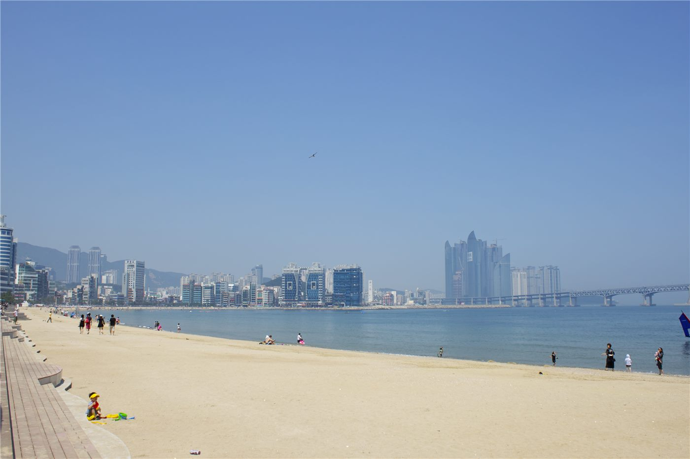

부산화교소학교, 추계 여행 공고… 새 학기 첫 단체 행사
부산화교소학교가 추계 여행 공고를 내고 참가 안내를 시작했다. 새 학기 개학에 이어지는 첫 단체 행사로, 학년별 인솔 편성과 준비물 안내가 함께 공지됐다.
왕숙영 기자 · 2026.09.03
橋화인소식

부산화교소학교가 추계 여행(秋季旅遊) 공고를 게시했다. 새 학기가 시작된 뒤 학교가 처음으로 여는 전교 단위 행사다.
광고 문의 · 300×250공고에는 일정과 집합 시간, 학년별 인솔 교사 배정, 준비물이 안내됐다. 학부모는 학교가 배포한 회신서를 통해 참가 여부를 알리도록 돼 있다.
화교학교의 단체 행사
한국의 화교학교에서 계절별 단체 행사는 단순한 나들이 이상의 기능을 한다. 학년과 학급을 넘어 학생들이 섞이는 자리이고, 학부모 사이의 교류가 이뤄지는 계기이기도 하다.
재학생 수가 많지 않은 학교일수록 이런 행사의 비중이 크다. 학교가 지역 화교 사회의 구심 역할을 겸하는 구조이기 때문이다.
참가 시 확인할 사항
학부모는 회신 기한, 참가비 납부 방법, 알레르기나 지병이 있는 경우 사전 고지 여부를 확인해야 한다. 우천 시 일정 변경 안내도 함께 확인해 두는 것이 좋다.
구체적인 일정과 세부 사항은 학교 공고문이 기준이다. 문의는 학교 사무실을 통하는 것이 정확하다.
출처·참고 (사실 확인용 — 본문은 직접 재작성)
· 釜山華僑小學 公告 2026-08
· 釜山華僑小學 公告 2026-08